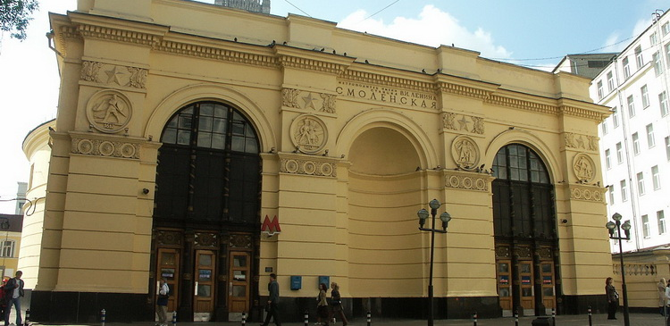

Представляю Вашему вниманию обзорную экскурсию по Москве. Этот экскурсионный маршрут можно отнести к классическим – он поможет посетившим в первый раз столицу ознакомиться с основными достопримечательностями города, а тем, кто уже знаком с Москвой, собрать образ в единое целое.
Начнем знакомство со столицей с прогулки по Старому и Новому Арбату (станиция метро "Смоленская"; Арбато-Покровская линия).

Рельефы павильона станции метро "Смоленская"
Хотелось бы сказать пару слов о самой станции...тема героизма русских защитников Отечества стала основой в оформлении внушительного по размерам павильона (1953г., архитекторы А.Ф.Стрелков, О.А.Великорецкий, соавтор Е.В.Васильев). Он решен в виде нарядного портика с тремя высокими арками, верхняя часть которого украшена четырьмя медальонами с изображением воинов, цветочных розеток и звезд.
В круглое медальонное поле вписаны рельефные фигуры русских солдат 1612, 1812, 1917, 1945 годов, сражающихся с врагом. Две арки служат для входа и выхода из метро. Они декорированы двумя черными колоннами с бронзововыми капителями и перевитыми лентами стволами.
Ребристый купол круглого зала наземного павильона вверху декорирован огромным горельефным венком, в центре которого помещена золотая звезда с отходящими от неё лучами, а внизу – мозаичный фриз с орденом Победы, военными трофеями, боевыми знаменами и цветочными орнаментами.
Со станции метро вы попадаете на Старый Арбат. Пройдя по улице 150 метров, Вы увидите двухэтажное бирюзовое здание – Музей-квартира А.С.Пушкина.

Музей-квартира А.С.Пушкина
Адрес: Арбат, 53 ст1
Часы работы: среда, пятница-воскресенье: 10:00-18:00; четверг: 12:00-21:00
Санитарный день: последняя пятница месяца
Часы работы кассы: среда 10:00-17:30; четверг: 12:00-20:30; пятница-воскресенье: 10:00-17:30
В Москве это единственный музеефицированный мемориал великого русского поэта. Здание включено в список памятников культуры государственного значения. 23 января 1831 года А.С. Пушкин заключил договор о найме квартиры в особняке на Арбате, принадлежавшем дворянской семье Хитрово. 17 февраля 1831 года, накануне свадьбы, на «мальчишник» у поэта собрались его московские друзья. Сюда после венчания в Храме Большого Вознесения у Никитских ворот А.С. Пушкин привез свою молодую жену. Здесь прошли первые три месяца счастливой семейной жизни Пушкиных. При желании можете посетить музей в любое удобное для вас время, а я предлагаю отправиться дальше по нашему маршруту
Повернув в четвертый переулок налево и пройдя пару минут, Вы окажетесь на Новом Арбате. Для тех кто проголодался, предлагаю перекусить в любом из кафе на Новом Арбате, их здесь на любой вкус и кошелек.
Прогуливаясь по Новому Арбату (в сторону его начала), мимо площади Арбатские Ворота, переходя на улицу Воздвиженка и минут через 6 Вы оказываетесь у Александровского Сада. Этот сад был основан в 1812 году, площадь парка 10 гектар и состоит из 3 частей: Верхнего, Среднего и Нижнего садов.
Предлагаю Вам прогуляться там, посмотреть на Могилу Неизвестного Солдата и Вечный огонь, Грот "Руины", Обелиск, Памятник патриарху Гермогену, Фонтанный комплекс, Памятник Александру I.
Мемориал "Могила Неизвестного Солдата". В 25-летнюю годовщину разгрома гитлеровских войск под Москвой из братской могилы близ Зеленограда был поднят прах Неизвестного солдата и 3 декабря 1966 года с воинскими почестями перезахоронен в Александровском саду у стен Кремля.
Мемориально-архитектурный ансамбль "Могила Неизвестного Солдата" был создан у северной стены Кремля по проекту академика Академии художеств СССР, народного художника СССР, лауреата пяти Сталинских премий скульптора Н.В.Томского и известных архитекторов Д.И.Бурдина, В.А.Климова, Ю.Р.Рабаева. Мемориал был открыт 8 мая 1967 года в торжественной обстановке в присутствии государственных лиц и почётных гостей. Вечный огонь, доставленный из Ленинграда с Марсова поля, был зажжён генеральным секретарём ЦК КПСС Л.И.Брежневым, а факел передал ему Герой Советского Союза А.П.Маресьев.

Могила Неизвестного Солдата
Композиция мемориального комплекса включает в себя надгробную плиту, выполненную в виде блока из темно-красного порфира, на которой лежит боевое знамя, ветвь лавра и солдатская каска (бронза). Выполненное с реалистической достоверностью полотнище флага, украшенное бахромой и двумя кистями, ниспадает красивыми складками.
Главное место в мемориале занимает Вечный огонь славы, чаша которого находится в центре пятиконечной объемной звезды, расположенной в нише квадратной формы. На ее поверхности объемными буквами выложены слова: "Имя твое неизвестно, подвиг твой бессмертен", которые приписывают С.А.Михалкову. Ещё одна надпись: "Павшим за Родину", помещенная между датами начала и окончания Великой Отечественной войны, нанесена на стене из малинового кварцита слева от могилы.
Аллея городов-героев
Справа от надгробия расположена гранитная аллея с 12-ю прямоугольными трубами из темно-красного порфира, в которых находятся капсулы с землей, собранной с мест ожесточенных боев. На лицевой стороне поверхности каждой из них дано название города-героя и нанесена барельефная золотая звезда. За аллеей с городами-героями установлена стела из красного гранита в виде десятиметрового блока, на котором даны названия 45 городов воинской славы.
Грот "Руины"
Другое название: Итальянский грот
Грот, созданный в 1841 году О. И. Бове, стал вещественным напоминанием о возрождении Москвы после разорения в 1812 французскими войсками. В стены грота вмонтированы обломки старинных зданий, разрушенных во время пребывания наполеоновских войск в городе.Грот "Руины", также известный как "Итальянский грот" занимает небольшое углубление у подножия Средней Арсенальной башни Кремля. Под полукруглой аркой из красного кирпича и черного гранита находятся мраморные ворота с четырьмя массивными колоннами. Крылья грота оформлены осколками московских зданий, разрушенных наполеоновской армией. Лестница в южной части грота ведет на смотровую площадку, украшенную двумя скульптурами львов. Во время праздничных мероприятий, а также просто во время прогулок царских особ по саду, в гроте играл царский оркестр.

Романовский обелиск в честь 300-летия царствования дома Романовых
Романовский обелиск в честь 300-летия царствования дома Романовых – удивительный мемориал, установленный в Александровском саду в 1914 году. Изначально посвящённый династии Романовых, в советские годы он был переделан в Памятник-обелиск выдающимся мыслителям и деятелям борьбы за освобождение трудящихся, а в наши дни - фактически утрачен при попытке восстановления изначального облика; таким образом, современный обелиск представляет собой неточную копию исторического. Четырёхгранный обелиск выполнен из гранита и установлен на массивном кубическом основании. На лицевой грани куба высечено посвящение: "В память 300-летия воцарения дома Романовых", а также изображены Георгий Победоносец и малые гербы российских княжеств, губерний и областей в щитках. Вершину обелиска венчает позолоченный двуглавый орёл, под которым размещён родовой герб бояр Романовых – грифон с мечом и щитом, а ниже во всю высоту монумента нанесены имена царей и императоров из династии Романовых от Михаила Фёдоровича до Николая II. На обелиске отсутствует лишь имя Ивана VI Антоновича – императора-младенца, который правил в возрасте 1 года, затем был свергнут и провёл всю жизнь в заточении, пока в 23 года его не убили.
Памятник патриарху Ермогену (Гермогену)
25 мая 2013 года в Александровском саду по проекту народного художника России, академика Академии художеств С.А.Щербакова (архитектор И.Н.Воскресенский) в торжественной обстановке был открыт долгожданный памятник патриарху Гермогену (бронза, гранит). Величественная бронзовая фигура, выполненная в реалистической манере, установлена на высоком гранитном постаменте, с обеих сторон которого расположены рельефы со сценами его деяний.
Прижизненных портретов патриарха Гермогена не было, и, работая над его внешним обликом, скульптуры изучали "Царские титулярники" 1672-1673 годов с поясными портретами деятелей русской церкви и иконы патриарха, написанные в XVIII — XIX веках, а также получившую большую известность икону с изображением патриарха на фоне Чудова монастыря в Московском кремле, написанную В.М.Васнецовым в 1913 году.
На правой стороне постамента изображена сцена избрания в 1613 году шестнадцатилетнего Михаила Фёдоровича Романова на царский престол. На левой — с пластической выразительностью запечатлено посещение боярами-предателями и поляками заточенного в монастрыской темнице Гермогена. Волевым жестом поднятой вверх правой руки с двуперстием он изгоняет непрошенных гостей.
Под руководством С.А.Щербакова и И.Н.Воскресенского над созданием монумента трудился коллектив преподавателей и студентов Российской академии живописи, ваяния и зодчества (К.В.Зубрилин, Н.П.Сидоров, М.Салычева, Н.Николаев, Д.Гимальдинова, Ю.Роткова, Е.Коваленская, В.Убасев).

Фонтанный комплекс в Александровском саду
Фонтанный комплекс расположен по краю Александровского сада вдоль Манежной площади, был установлен в 1996 году. Комплекс состоит из шести частей: «Гейзер», «Река Неглинная», «Завеса», «Улитка», «Водопад», «Грот», которые украшены скульптурами Зураба Церетели. Фонтан «Река Неглиная» имитирует русло реки, его украшает скульптурная композиция «Герои сказок» со скульптурами персонажей: русалки, Ивана-царевича с Царевной-лягушкой и другие. Второй крупный фонтан в составе комплекса — «Гейзер», украшен скульптурой «Времена года», изображающей четырёх коней — четыре сезона. Остальные фонтаны комплекса небольшие и служат дополнением к основной части.

Памятник императору Александру I
Монумент был открыт по проекту С.А.Щербакова (архитектор И.Н.Вознесенский) 20 ноября 2014 года. Бронзовая фигура императора стоит на высоком цилиндрическом постаменте, украшенном двуглавым орлом с короной и двумя рельефами: "Битва нородов под Лейпцигом в октябре 1813 года" и "Победоносное вступление императора Александра I в Париж в марте 1814 года". Русский государь изображен победителем, попирающим францезские трофеи, с опущенной шпагой в левой руке, символизирующей окончание войны. Он одет в военный мундир, украшенный Андреевской лентой и орденами, и длинный широкий плащ.
На противоположенной стороне от памятника установлена массивная гранито-мраморная стела с бронзовыми прямоугольными рельефами, на которых замечатлены встреча Александра I с Серафимом Саровским, Бородинская битва, а также Александр I в окружении своих полкодцев. В левом рельефе дано изображение Казанского собора в Санкт-Петербурге и храма Христа Спасителя в Москве. В тондо запечатлена сцена посещения Александра I кельи Серафима Саровского. Сидящий под иконами император внимательно слушает наставления великого старца и провидца. Правый рельеф состоит из многофигурной экспозиции с изображением Бородинской битвы, в центре которого в тондо, обрамленном сверху двуглавым орлом, запечатлен Александр I в окружении своих полкодцев и офицеров. Между рельефными композициями установлена бронзовая доска с текстом решения Синода, Сената и Государственного совета от 3 августа 1914 года – воздвинуть памятник Александру Благословенному в престольном граде Москве от признательной России. Доска помещенна среди многочисленных военных предметов, которые с друвних времён применялись в сражениях за русскую землю.
После прогулки по Александровскому саду предлаю отправиться дальше. Вам нужно выйти из ворот около Могилы Неизвестного Солдата. Когда Вы выйдете из Александровского сада, Вы окажитесь на Манежной площади и увидите красное здание — это Государственный исторический музей.
Государственный исторический музей
Государственный исторический музей – крупнейший музей национальной истории Российского государства. Здесь хранятся бесценные памятники археологии, нумизматики, древнерусской живописи и книжности, оружие, произведения изобразительного и декоративно-прикладного искусства. Коллекции музея насчитывают около 5 миллионов музейных предметов и более 14 миллионов листов документальных материалов. В 2006 году Исторический музей закончил работу над постоянной экспозицией. На двух этажах в 39 залах представлена история России с древнейших времен до начала XX века. Экспозиция начинается на втором этаже. Он посвящен первобытному обществу, Древней Руси, раздробленности, борьбе с иноземными захватчиками, объединению России, культуре, освоению Сибири. На третьем этаже показана Россия, начиная с эпохи Петра I: политика, культура, экономика Российской империи. Музей прошел масштабную реконструкцию. В нем восстановлены исторические интерьеры, но в тоже время музей соответствует всем требованиям наших дней. Например, музей оборудован лифтом для инвалидов, имеет в наличии коляски. Для того, чтобы гостям музея были понятны исторические события, которые представлены через предметы, в залах размещены информационные материалы. Кроме бумажного информационного сопровождения, в экспозиции представлено большое число экранов, мониторов. Они демонстрируют предметы, которые не вошли в экспозицию или то, что не может увидеть посетитель. Например, в витрине представлена книга, ее нельзя взять в руки, а на мониторе перелистываются ее страницы.
В музее на 4 тысячах квадратных метров представлено около 22 тыс. предметов. Чтобы обойти экспозицию музея необходимо сделать более 4 тысяч шагов, что составляет около 3 км. Таков масштаб музея в цифрах. Если на каждый экспонат потратить около минуты для осмотра, то всего потребуется где-то 360 часов времени, а это только 0,5 % своих коллекций!
Перед Государственным историческим музеем находится еще один немаловажный памятник, который посвящен маршалу Г.К.Жукову
Памятник маршалу Г.К.Жукову
К 50-летию Победы в Великой Отечественной войне, по проекту В.М.Клыкова (архитектор Ю.П.Григорьев) 8 мая 1995 года был открыт конный памятник Маршалу, четырежды Герою Советского Союза Георгию Константиновичу Жукову (1896 – 1974). Сидя на стройной лошади, под ногами которой лежат поверженные нацистские знамена, полководец объезжает военный парад на Красной площади, построенный в честь Победы над фашистской Германией в 1945 году.
Натянув поводья и привстав в стременах, марщал приветствует воинов-победителей. Лицо Г.К.Жукова выглядит решительно и строго. Фигура всадника и лошадь, вылепленные плотно и несколько суховато, установлены на высоком гранитном постаменте прямоугольной формы, с рельефным изображением Георгия Победоносца.
Обогнув Исторический с левой стороны, Вы увидите памятник, вмонтированный в каменную мостовую. это знак нулевого отсчета километров

Знак нулевого отсчета километров
Со времен Петра I отсчет расстояний в Российской империи велся от мраморного столба с Нулевой верстой, установленного в 1714 году на Главпочтамте Санкт-Петербурге (ныне Почтамтская улица)ю В Московии в XVII веке мерилом дорожных расстояний служила колокольня Ивана Великого в Кремле. С учреждением в 1696 году Почтарного договора на Сретенке, который впоследствии был несколько раз перемещен, почтамт обосновался в Немецкой слободе (ныне улица Малая Почтовая) и был точкой отсчета верстовых расстояний. Затем московская почта в 1783 году переехала на Мясницкую улицу, и в 1912 году у Мясницкий Ворот было построено капительное здание Главпочтамта в духе средневекового романского зодчества (архитектор О.Р.Мунц, братья Веснины).
В 1995 году вопреки исторической традиции и данным точных наук и типографии за нулевую точку отсчета километров выбрали место не у здания Центрального телеграфа на Тверской улице, а возле Воскресенских ворот у Иверской часовни в оживленном переходе, соединяющим Красную площадь с Манежной.
Знак "Нулевой километр" был создан в 1996 году по проекту известного скульптора А.И.Рукавишникова (архитектор И.Н.Воскресенский) в виде бронзовой барельефной композиции, вмонтированной в каменную мостовую. Уложенная на брусчатку бронзовая барельефная плита, с внешней стороны имеющая квадратную форму, разделена на четыре части, на поверхности которых нанесены условные изображения флоры и фауны России. В центре плиты, в большом круге, помещена многогранная звезда с цифрой "ноль", по краю обрамленная надписью: "Нулевой километр автодорог Российской федирации".
Продолжаем наш маршрут и что бы оказаться на Красной площади, Вам надо пройти через Воскресенские ворота (возле знака нулевого отсчета километров). Слева от себя Вы увидите Артиллерийский двор, за ним будет находиться Храм Казанской Иконы Божией Матери, а за храмом протягиваются торговые ряды ГУМ. На противоположенной стороне от ГУМа находится мавзолей Ленина, а за мавзолеем возвышается здание Сената. Пройдя от мавзолее прямо 200 метров, Вы увидите Спасскую башню, а напротив неё находится лобное место. За лобным местом располагается храм Василия Блаженного, а перед храмом стоит памятник Минину и Пожарскому.
Храм Казанской иконы Божией Матери на Красной площади
Адрес: г. Москва, ул. Никольская, д. 3
Телефон: +7 (495) 698-19-96
Храм открыт ежедневно с 9.00 до окончания вечернего богослужения.
Собор Казанской иконы Божией Матери был воздвигнут в память об освобождении Русского государства от польско-литовских интервентов, которое совершилось при помощи и заступлении Божией Матери, явившей Свою милость через чудотворную Казанскую икону. Храм был построен на средства первого царя династии Романовых Михаила Феодоровича и освящен в 1636 г. Со времени постройки храм стал одной из важнейших московских церквей, его настоятель занимал одно из первых мест в московском духовенстве. На протяжении своей истории собор неоднократно перестраивался — в 1760-х, 1802-05, 1865 гг. В 1920-е гг. в соборе некоторое время служили обновленцы. В 1925-1933 годах проводилась реставрация собора под руководством архитектора П.Д. Барановского. В 1928 г. была снесена колокольня собора. В 1930 г. Казанский собор был закрыт, а в 1936 г. — снесен.
Собор был восстановлен в 1990-1993 гг. на средства мэрии Москвы и пожертвования граждан. Казанский собор — первый из полностью утраченных в советское время храмов Москвы, который был воссоздан в первоначальных формах. Воссоздать исторический облик храма стало возможным благодаря обмерам, сделанным архитектором П.Д. Барановским перед разрушением храма, и исследованиям историка С.А. Смирнова. 4 ноября 1993 г. храм был освящен Святейшим Патриархом Алексием II.
Богослужение: Ежедневно — часы и Литургия в 9:00, начало вечернего богослужения в 17:00, по воскресным и праздничным дням — Литургия в 7:00 и 10:00.
ГУМ в XIX веке
Верхние торговые Ряды были открыты 2 декабря 1893 года. Это был исключительный для Москвы и для России проект — на тот момент это был самый крупный пассаж Европы. Верхние Торговые Ряды сознательно делались как символ Новой Москвы. Они строились на традиционном месте московского торга, тут были бесконечные лавки, «полулавки», «четвертьлавки», и хотя на Красную площадь ряды выходили гордым классицистическим фасадом Осипа Бове, внутри это живо напоминало Большой базар Стамбула или Дамаска. В феврале 1889 состоялся конкурс на проект Рядов, который выиграл Александр Померанцев. По первоначальному проекту Александра Померанцева Верхние Торговые Ряды представляли собой 16 больших отдельных зданий с застекленными улицами между ними. Это был целый город, идеальный город русского торгового капитализма: шелковые и парчовые ткани братьев Сапожниковых (6 гран-при на Всемирных выставках), часы Михаила Калашникова (у него купили себе Patek Philippe Лев Толстой и Петр Чайковский), кондитерская Абрикосовых (поставщики императорского двора с правом печатать государственный герб на своих коробках), парфюмерия Брокар (также поставщик императорского двора. А также официальный поставщик испанского королевского двора) и так далее. Вместе с тем на верхних этажах линий товары были гораздо дешевле, а огромный двухярусный подвал использовался для оптовой торговли (он освещался через стеклянные фонари в полу).
В 1917 году торговлю закрыли, товары реквизировали, здесь расположился Наркомпрод Александра Дмитриевича Цюрупы, осуществлявшего отсюда политику "продовольственной диктатуры". В Рядах расположился склад реквизированного продотрядами и столовая для совслужащих. В 1922 году Владимир Ленин решил, что политика "военного коммунизма" не даст возможности коммунистам удержатся у власти, и объявил НЭП — "Новую экономическую политику". Но сначала он решил попробовать это в Верхних Торговых Рядах и 1 декабря 1921 года подписал "Положение о Государственном Универсальном Магазине (ГУМ)". Рекламой ГУМа, плакатами Владимира Маяковского и Александра Родченко, была заклеена вся Москва — ГУМ стал символом НЭПа.
Сталин закрыл ГУМ в 1930 году, сюда вселились министерства и ведомства, первая линия была полностью закрыта для входа, здесь находился кабинет Берии. Какая-то торговля продолжалась, у фонтана функционировал Торгсин и комиссионный магазин по продаже имущества врагов народа, на Никольскую выходил продуктовый магазин, но в целом ГУМ прекратил свое существование. Сталин дважды — в 1935 и в 1947 годах — собирался сносить ГУМ, дважды выпускались правительственные постановления, но не дошли руки. Он умер 5 марта 1953 года. Был вдвое уменьшен военный бюджет, началось усиленное развитие сельского хозяйства и легкой промышленности — все, что потом получило название «Нового курса» Никиты Хрущева. Но сначала они решили попробовать в ГУМе — он был реконструирован и открыт для публики 24 декабря 1953 года. 23 декабря был расстрелян Лаврентий Берия, газеты сообщили об этом в один день. ГУМ стал символом оттепели.
ГУМ сейчас
Часы работы: ежедневно с 10:00 до 22:00
Сегодня ГУМ живет так, как он был когда-то задуман, — идеальный торговый город Москвы. С 2007 года вновь радует посетителей фонтан в центре ГУМа — легендарное сооружение, запечатленное и в официальных хрониках ХХ века. Восстановлен легендарный кинозал, вошедший в историю отечественного кинематографа. На внешнем фасаде реализован уникальный проект иллюминации. С 2006 года на Красной площади открывается ГУМ-Каток, который сразу приобрел славу самой яркой ледовой площадки столицы. В ГУМе вновь работает Гастроном № 1, который когда-то создавал Анастас Микоян как практическое приложение к своей "Книге о вкусной и здоровой пище". И дизайном, и одеждой продавцов, и даже наличием в ассортименте некоторых классических товаров советской эпохи (например, чай "Три слона") Гастроном № 1 возвращает нас в 1950-60-е годы, хотя это, конечно, игра. По сути своей это магазин, способный удовлетворить гастрономические капризы самого взыскательного сегодняшнего потребителя. В той же советской стилистике выполнены кафе "Фестивальное" и Столовая № 57. Кафе названо в честь Фестиваля молодежи и студентов, прошедшего в Москве в 1957 году и собравшего 34 000 человек из 131 страны мира. Об этом событии напоминают рисунки, лозунги на нескольких языках, размещенные на стенах. Столовая № 57 — это классическая линия самообслуживания, идею которой Микоян подсмотрел в Америке в 1936-м, а смог реализовать только в эпоху оттепели. Правда, еда другая: тут теперь хорошая русская и европейская кухня, а не «хамбургер», как это называл Микоян, то есть не "микояновская котлета", как ее называли советские люди.
Мавзолей Ленина
Часы работы: ежедневно с 10:00 до 13:00, кроме понедельников и пятниц.
Вход бесплатный.
Мавзолей Ленина — памятник, музей, а по сути — усыпальница, расположенная в самом центре Красной площади. Согласно распространенной версии, идея бальзамировать Ленина принадлежала Калинину и «за» выступили практически все победившие на тот момент большевики. Отрицательно к этой идее отнесся только Троцкий, который назвал этот посыл «настоящим безумием». Однако более поздние исследования говорят о том, что сама идея изначально принадлежала Сталину. Он считал, что простое отрицание существующей религии — недопустимо и необходимо совместно с национальной идеей создать практически новую религию, культ, который станет основой для нового строя. В качестве «бога» был выбрал Ленин, а в качестве главного жреца — сам Сталин.
Спасская башня Московского кремля
В 1491 году при князе Иване III для укрепления северо-восточной части города была сооружена Спасская башня. Строительство выполнил архитектор Пьетро Антонио Солари. Сначала она называлась Фроловской, по имени церкви во имя Святых мучеников Фрола и Лавра, расположенной рядом. Сооружение было в два раза ниже, чем сейчас. Многоярусный верх и каменный купол в готическом стиле были возведены значительно позже - в 1624-1625 гг. английским архитектором Христофором Галовеем и русским мастером Баженом Огурцовым. Указом царя Алексея Михайловича 16 апреля 1658 года башня была переименована в Спасскую. Такое название она получила, поскольку через нее шла дорога к Спасо-Смоленскому храму. Есть мнение, что название она получила в честь иконы Спаса Нерукотворного, помещенной над воротами со стороны Красной площади. Спасские ворота – самые главные из Кремлевских ворот. Мужчины снимали головные уборы перед образом Спасителя со стороны Красной площади. Через них нельзя было проезжать верхом. По легенде, когда Наполеон проезжал через эти ворота, ветер сорвал с него треуголку. Все цари перед коронацией проходили через эти ворота. Воины уходили отсюда на решающие битвы. На протяжении многих лет Спасские ворота открывались очень редко, только в исключительных случаях, например, для проезда кортежа президента. С августа 2014 года через ворота можно выйти на Красную площадь. Попасть в Кремль по прежнему можно только через Кутафью башню. Спасская Башня - квадратная в основании и имеет 10 этажей. Ее высота - 71 метр. В середине 17 века на ней была помещена фигура двуглавого орла - герба России. Эксперты считали, что образ Спасителя над ее воротами безвозвратно потерян. Предположительно в 1937 году, в год юбилея революции, икона Спасителя, как и другие надвратные образы, была замурована. Но недавно она была найдена. По инициативе Фонда Андрея Первозванного 29 июня 2010 года специалисты начали ее реставрацию. Икона хорошо сохранилась. Ее сюжет посвящен избавлению Москвы от нашествия хана Мехмет-Гирея. Тогда, в 1521 году, преподобные Сергий и Варлаам просили Богородицу о заступничестве перед Богом. И Мехмет-Гирей отступил. Икона страдала и от пожара и во время войны с Наполеоном. После восстановления будет проводиться ее реставрация.
Первые часы на Спасской башне были установлены в 1491 году. В дальнейшем они неоднократно менялись и реставрировались. Так, в 1625 году под руководством английского мастера Христофора Галовея были сделаны новые, которые исполняли музыку. В 1705 году по указанию Петра I часы были переделаны по немецкому образцу с циферблатом на 12 часов. В 1851-1852 гг. на 8-10 ярусах установили куранты, исполняющие поочередно «Марш Преображенского Полка» и гимн «Коль славен наш Господь в Сионе» Дмитрия Бортнянского. Эти мелодии звучали до 1917 года. В 1920 году на курантах была подобрана мелодия Интернационала. В 1999 году стрелки и цифры позолотили. Куранты стали исполнять государственный гимн России. Высота римских цифр часов составляет 0,72 метра. Длина часовой стрелки - 2,97 м, минутной - 3,27 м. Часы заводятся с помощью трёх электромоторов. Бой часов осуществляется при помощи молотка, соединённого с механизмом и колоколом. Циферблаты имеют диаметр 6,12 м и выходят на четыре стороны. В 1935 году Царского орла на Спасской башне сменила первая пятиконечная звезда - символ советской эпохи. Она была медная, покрыта золотом и уральскими самоцветами. Через 2 года ее сменила рубиновая звезда. Первая звезда теперь венчает шпиль Северного речного вокзала. Размах крыльев новой звезды составляет 3,75 метра. Это чуть меньше, чем у первой. Внутри звезды круглосуточно горит лампа мощностью 5000 вт.
Лобное место
Лобное место – небольшое круглое возвышение с каменной оградой. В далеком прошлом это сооружение использовалось царями и другими высокопоставленными лицами во время праздничных мероприятий для оглашения указов или провозглашения торжественных речей. Изначально постройка представляла собой невысокий помост из кирпича, огражденный деревянной решеткой. После неоднократных реконструкций, Лобное место стало возвышенным сооружением в окружении невысоких каменных перил с постаментом в самом центре конструкции. В западной части Лобного места находится дверь с железной решеткой, через которую на верхнюю площадку ведут 11 ступенек. Следуя трактовке древних документов, ряд исследователей считает, что Лобное место было устроено в 1521 году в честь избавления города от нашествия татар. Впервые оно упоминается в некой рукописи от 1549 г., когда на Лобном месте двадцатилетний Иван Грозный держал речь перед горожанами, призывая примириться враждующих между собой бояр. С тех пор место часто называлось «Царевым», как царская кафедра или царский трибунал. Все последующее время, вплоть до переноса столицы Российского государства в Санкт-Петербург, постройка была главной городской трибуной, на которой народу объявлялись важнейшие указы царя; здесь дважды в год государь представлял своему народу наследника, (до тех пор, пока последний не достигал совершеннолетия); здесь объявлялось об избрании патриарха, о начале войны и о подписании мирного соглашения; около Лобного места были казнены взбунтовавшиеся стрельцы Петра I, а у его ступенек лежало обезображенное тело Лжедмитрия I.
Происхождение самого названия «лобное» до сих пор на 100% не выяснено. Одно с предположений гласит, что такое название связано с ранее проводимыми здесь казнями, которые в древности называлось "складывать лбы" или "рубить лбы". Наиболее приемлемой версией считается следующая: Лобное место расположено там, где начинается Васильевский спуск, который круто опускается к Москве-реке. Места с такими перепадами высот на Руси назывались "Лбами".
Собор Василия Блаженного
Часы работы: ежедневно 10:00-18:00; в зимний период: 11:00-17:00
Внимание: с 23 августа по 2 сентября, в связи с проведением фестиваля "Спасская башня",
музей "Покровский собор" работает с 10:00 до 16:00, касса — до 15:15
1 октября 1552 года, в праздник Покрова Божией Матери начался штурм Казани, который закончился победой русских воинов. В честь этой победы по указу Ивана Грозного был заложен храм Покрова Божией Матери, известный сейчас как собор Василия Блаженного. Храм строился в 1552-1554 гг. в то время, когда шла война с Золотой Ордой за покорение Казанского и Астраханского царств. После каждой победы строилась деревянная церковь в честь того святого, день памяти которого отмечался в этот день. Также некоторые храмы были построены в честь знаменательных событий. К окончанию войны на одной площадке оказалось 8 церквей. Святитель Московский митрополит Макарий посоветовал царю построить один храм в камне с общим основанием. В 1555-1561 гг. зодчими Бармой и Яковлевым были построены на одном фундаменте восемь храмов: четыре из них осевые и четыре поменьше между ними. Все они разные по архитектурному убранству и имеют луковичные купола, украшенные карнизами, кокошниками, окнами, нишами. В центре возвышается девятая церковь с маленькой главкой в честь Покрова Божией Матери. В 17 веке была построена колокольня с шатровым куполом. Учитывая этот купол, на храме – 10 куполов:
Центральная церковь сооружена в честь Покрова Богородицы.
Северная церковь освящена во имя Киприана и Устины, а позже – во имя святого Андриана и Наталии.
Восточная церковь освящена во имя Троицы.
Западная церковь освящена во имя Входа в Иерусалим в память о возвращении войска Ивана Грозного в Москву.
Северо-восточная церковь освящена во имя Трех Патриархов Александрийских.
Юго-восточная церковь — во имя Александра Свирского.
Юго-западная церковь — во имя Варлаама Хутынского.
Северо-западная — во имя Григория Армянского.
Южная церковь — во имя Николы Великорецкого.
Северо-восточная церковь освященая во имя Василия Блаженного.
Восемь глав, построенных вокруг центральной девятой, в плане образуют фигуру, состоящую из двух квадратов, расположенных под углом в 45 градусов и представляющую собой восьмиконечную звезду. Число 8 символизирует день Воскресения Христа, а восьмиконечная звезда - символ Пресвятой Богородицы. Квадрат означает твердость и постоянство веры. Его четыре стороны означают четыре стороны света и четыре конца креста, четыре апостола-евангелиста. Центральный храм объединяет остальные церкви и символизирует покровительство над всей Россией.
Сейчас храм открыт как музей. Его посетители могут подняться по винтовой лестнице и полюбоваться иконостасами, в которых находятся иконы 16-19 веков и увидеть узоры внутренней галереи. Стены украшены масляной живописью и фресками 16-19 веков. В музее представлена портретная и пейзажная живопись, а также церковная утварь 16-19 веков.
Памятник Минину и Пожарскому
20 февраля 1818 года при огромном стечении народа на Красной площади был торжественно открыт памятник Кузьме Минину и Дмитрию Михайловичу Пожарскому, созданный по проекту И.П.Мартоса.
Идея создания памятника, в котором главным лицом должен стать не князь Дмитрий Михайлович Пожарский, а Кузьма Минин — представитель русского народа, появилась у членов Вольного общества любителей российской словесности и была с оптимизмом воспринята скульптором. По общенародной подписке собирались денежые средства на сооружение памятника, который должен был увековечить освобождение в 1612 году Москвы от польской интроверции. Особую актуальность и общественное звучание эта тема получает в период Отечественной войны 1812 года. Монумент состоит из двух бронзовых фигур, помещенных на гранитном пьедестале прямоугольной формы, украшенном с передней и задней сторон многофигурными барельефами. Стоящий К.Минин энергичным жестом правой руки указывает Д.М.Пожарскому на захваченный поляками Кремль, а другой рукой вручает ему большой боевой меч. Раненый в боях князь, вдохновленный призывами посадского старосты, собирается подняться со своего ложа, опираясь на щит с изображением Спаса Нерукотворного и держась за рукоять меча. Ориентируясь на античные образцы, И.П.Мартос изображает Д.М.Пожарского в хитоне, а К.Минина облачает в русскую рубаху и штаны, при этом его голова напоминает древнегреческого бога Зевса.